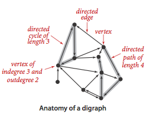
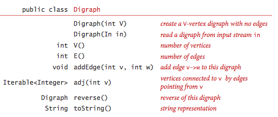
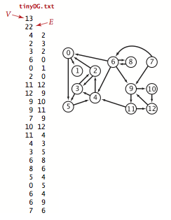
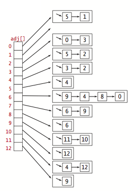
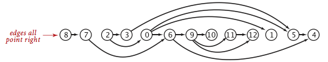
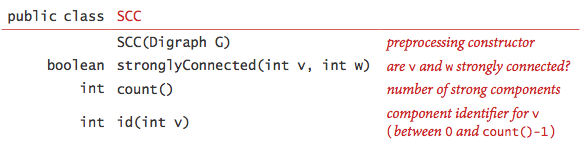
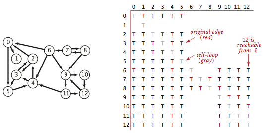

Directed Graphs
§ Digraphs.
A directed graph (or digraph) is a set of vertices and a collection of directed edges that each connects an ordered pair of vertices. We say that a directed edge points from the first vertex in the pair and points to the second vertex in the pair. We use the names 0 through V-1 for the vertices in a V-vertex graph.

§ Glossary.
Here are some definitions that we use.
- A self-loop is an edge that connects a vertex to itself.
- Two edges are parallel if they connect the same ordered pair of vertices.
- The outdegree of a vertex is the number of edges pointing from it.
- he indegree of a vertex is the number of edges pointing to it.
- A subgraph is a subset of a digraph's edges (and associated vertices) that constitutes a digraph.
- A directed path in a digraph is a sequence of vertices in which there is a (directed) edge pointing from each vertex in the sequence to its successor in the sequence, with no repeated edges.
- A directed path is simple if it has no repeated vertices.
- A directed cycle is a directed path (with at least one edge) whose first and last vertices are the same.
- A directed cycle is simple if it has no repeated vertices (other than the requisite repetition of the first and last vertices).
- he length of a path or a cycle is its number of edges.
-
We say that a vertex
wis reachable from a vertexvif there exists a directed path fromvtow. -
We say that two vertices
vandware strongly connected if they are mutually reachable: there is a directed path fromvtowand a directed path fromwtov. - A digraph is strongly connected if there is a directed path from every vertex to every other vertex.
- A digraph that is not strongly connected consists of a set of strongly connected components, which are maximal strongly connected subgraphs.
- A directed acyclic graph (or DAG) is a digraph with no directed cycles.


§ Digraph graph data type.
We implement the following digraph API.

The key method adj() allows client code
to iterate through the vertices adjacent from a given vertex.
We prepare the test data tinyDG.txt using the following input file format.

§ Graph representation.
We use the adjacency-lists representation, where we maintain a vertex-indexed array of lists of the vertices connected by an edge to each vertex.

Digraph.java implements the digraph API using the adjacency-lists representation. AdjMatrixDigraph.java implements the same API using the adjacency-matrix representation.
§ Reachability in digraphs.
Depth-first search and breadth-first search are fundamentally digraph-processing algorithms.
- Single-source reachability:
Given a digraph and source
s, is there a directed path from s to v? If so, find such a path. DirectedDFS.java uses depth-first search to solve this problem. - Multiple-source reachability: Given a digraph and a set of source vertices, is there a directed path from any vertex in the set to v? DirectedDFS.java uses depth-first search to solve this problem.
- Single-source directed paths: given a digraph and source
s, is there a directed path from s to v? If so, find such a path. DepthFirstDirectedPaths.java uses depth-first search to solve this problem. - Single-source shortest directed paths: given a digraph and source
s, is there a directed path from s to v? If so, find a shortest such path. BreadthFirstDirectedPaths.java uses breadth-first search to solve this problem.
§ Cycles and DAGs.
Directed cycles are of particular importance in applications that involve processing digraphs. The input file tinyDAG.txt corresponds to the following DAG:

- Directed cycle detection: does a given digraph have a directed cycle? If so, find such a cycle. DirectedCycle.java solves this problem using depth-first search.
- Depth-first orders:
Depth-first search search visits each vertex exactly once.
Three vertex orderings are of interest in typical applications:
- Preorder: Put the vertex on a queue before the recursive calls.
- Postorder: Put the vertex on a queue after the recursive calls.
- Reverse postorder: Put the vertex on a stack after the recursive calls.

- Topological sort: given a digraph, put the vertices in order
such that all its directed edges point from a vertex earlier in the order to a
vertex later in the order (or report that doing so is not possible).
Topological.java solves this problem
using depth-first search. Remarkably, a reverse postorder in a DAG provides
a topological order.

 Proposition.
Proposition.
A digraph has a topological order if and only if it is a DAG.
Proposition.
Reverse postorder in a DAG is a topological sort.
Proposition.
With depth-first search, we can topologically sort a DAG in time proportional to V + E.
§ Strong connectivity.
Strong connectivity is an equivalence relation on the set of vertices:
- Reflexive: Every vertex v is strongly connected to itself.
- Symmetric: If v is strongly connected to w, then w is strongly connected to v.
- Transitive: If v is strongly connected to w and w is strongly connected to x, then v is also strongly connected to x.
Strong connectivity partitions the vertices into equivalence classes, which we refer to as strong components for short. We seek to implement the following API:

Remarkably, KosarajuSharirSCC.java implements the API with just a few lines of code added to CC.java, as follows:
- Given a digraph G, use DepthFirstOrder.java to compute the reverse postorder of its reverse, GR.
- Run standard DFS on G, but consider the unmarked vertices in the order just computed instead of the standard numerical order.
-
All vertices reached on a call to the recursive
dfs()from the constructor are in a strong component (!), so identify them as in CC.
Proposition.
The Kosaraju-Sharir algorithm uses preprocessing time and space proportional to V + E to support constant-time strong connectivity queries in a digraph.
§ Transitive closure.
The transitive closure of a digraph G is another digraph with the same set of vertices, but with an edge from v to w if and only if w is reachable from v in G.

TransitiveClosure.java computes the transitive closure of a digraph by running depth-first search from each vertex and storing the results. This solution is ideal for small or dense digraphs, but it is not a solution for the large digraphs we might encounter in practice because the constructor uses space proportional to V^2 and time proportional to V (V + E).